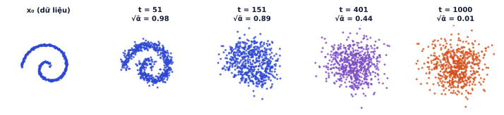
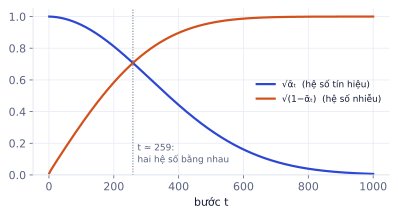
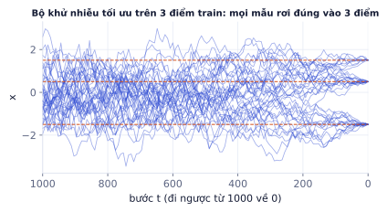

Bài 1
ᾱ với β hằng số
tính tayβ = 0.2 ở mọi bước. x₀ = 1, nhiễu rút được ε = 1.
Lời giải
α = 0.8, ᾱ₂ = 0.64. x₂ = √0.64·1 + √0.36·1 = 0.8 + 0.6 = 1.4.
Giai đoạn mở đầu của dự án làm lại đồ án tạo ảnh. Trang lý thuyết tương tác (demo kéo t để xem xoắn ốc tan thành nhiễu, demo sinh 400 điểm từ nhiễu, bài kiểm tra 9 câu) nằm ở nút Vào bài học phía trên. Trang này giải thích đầy đủ từng công thức kèm ví dụ số, code PyTorch đã chạy thử, rồi tới bài tập và notebook thực hành.
Trang lý thuyết tương tác, bài tính tay và bài kiểm tra cuối bài.
Diffusion là nền tảng của Stable Diffusion, Midjourney, Sora, Flux. Hiểu nó trên dữ liệu 2D nhỏ (chạy CPU 30 giây) là cách nhanh nhất để đọc hiểu code và bài báo về tạo ảnh, và để giải thích được trong phỏng vấn chứ không chỉ gọi thư viện.
Nhỏ một giọt mực vào cốc nước: mực loang dần cho tới khi cả cốc một màu đục đều. Quá trình này dễ, tự nhiên xảy ra. Đi ngược lại (từ cốc nước đục tách ra giọt mực ban đầu) thì khó. Diffusion model làm đúng điều khó đó, nhưng chia nhỏ thành rất nhiều bước:

Vì sao không gỡ một lần cho xong? Từ nhiễu thuần nhảy thẳng tới ảnh là bài toán có vô số đáp án (nhiễu nào cũng có thể thành ảnh nào), mạng sẽ học ra trung bình mờ nhòe của tất cả. Chia nhỏ thành nhiều bước thì mỗi bước chỉ cần một chỉnh sửa nhỏ, mạng học được chính xác.
Ở mỗi bước t, ta trộn dữ liệu bước trước với nhiễu mới theo tỉ lệ βₜ (beta):
xₜ = √(1 − βₜ) · xₜ₋₁ + √βₜ · εₜ, εₜ ~ N(0, I)
Lịch nhiễu (noise schedule) là dãy β₁ … β₁₀₀₀. Bài báo DDPM gốc dùng lịch tuyến tính: β tăng đều từ 0.0001 tới 0.02. Đầu quá trình thêm rất ít nhiễu (để giữ chi tiết), cuối quá trình thêm nhiều hơn.
Đặt hai ký hiệu dùng xuyên suốt:
| Ký hiệu | Định nghĩa | Ý nghĩa |
|---|---|---|
| αₜ | 1 − βₜ | phần tín hiệu giữ lại ở bước t |
| ᾱₜ (alpha bar) | α₁ · α₂ · … · αₜ | phần tín hiệu còn lại sau t bước, tính từ x₀ |
Điều làm diffusion train nhanh: không cần chạy lần lượt t bước để có xₜ. Có công thức đóng:
xₜ = √ᾱₜ · x₀ + √(1 − ᾱₜ) · ε, ε ~ N(0, I)
Lấy β₁ = 0.1, β₂ = 0.2, dữ liệu x₀ = 2, rút được nhiễu ε = −0.5.
Ngược lại, biết x₂ = 1.43 và biết đúng ε = −0.5 thì khôi phục được x₀ = (1.43 + 0.265) / 0.849 ≈ 2. Đây là lý do model chỉ cần đoán nhiễu.
Vì sao nhảy thẳng được. Viết hai bước liên tiếp:
x₁ = √α₁ · x₀ + √β₁ · ε₁ x₂ = √α₂ · x₁ + √β₂ · ε₂ = √(α₁α₂) · x₀ + √α₂·√β₁ · ε₁ + √β₂ · ε₂
Hai nhiễu Gauss độc lập cộng lại vẫn là Gauss, phương sai cộng lại: α₂β₁ + β₂ = α₂(1 − α₁) + (1 − α₂) = 1 − α₁α₂ = 1 − ᾱ₂. Nên x₂ = √ᾱ₂ · x₀ + √(1 − ᾱ₂) · ε với một ε chuẩn duy nhất. Với số ở ví dụ: 0.8 · 0.1 + 0.2 = 0.28 = 1 − 0.72. Quy nạp cho mọi t.
Bình phương hai hệ số luôn cộng lại bằng 1: ᾱₜ + (1 − ᾱₜ) = 1. Nếu dữ liệu đã chuẩn hóa về phương sai 1 thì xₜ cũng có phương sai 1 ở mọi bước: độ lớn không phình ra hay co lại, chỉ có tỉ lệ tín hiệu/nhiễu thay đổi. Vì thế dữ liệu cần chuẩn hóa trước (ảnh được đưa về khoảng [−1, 1]).

| t | ᾱₜ | √ᾱₜ (tín hiệu) | √(1 − ᾱₜ) (nhiễu) |
|---|---|---|---|
| 1 | 0.9999 | 1.000 | 0.010 |
| 250 | 0.524 | 0.724 | 0.690 |
| 500 | 0.079 | 0.280 | 0.960 |
| 750 | 0.003 | 0.058 | 0.998 |
| 1000 | ≈ 0 | 0.006 | 1.000 |
import torch, math
T = 1000
betas = torch.linspace(1e-4, 0.02, T)
alphas = 1 - betas
alpha_bars = torch.cumprod(alphas, dim=0) # tích lũy: ᾱ₁, ᾱ₂, ..., ᾱ₁₀₀₀
def q_sample(x0, t, eps):
ab = alpha_bars[t].unsqueeze(1) # (B,) -> (B,1) để nhân với x0 có shape (B,2)
return ab.sqrt() * x0 + (1 - ab).sqrt() * eps
Lệch chỉ số t. Trong toán, t chạy từ 1 tới 1000; trong code, tensor đánh số từ 0 tới 999. alpha_bars[t] với t lấy từ torch.randint(0, T, ...) là đúng. Lẫn hai cách đếm sẽ tạo lỗi lệch một bước rất khó phát hiện vì model vẫn train được, chỉ kém hơn.
Model ε_θ(xₜ, t) nhận dữ liệu đã nhiễu xₜ và số bước t, đoán nhiễu ε đã được thêm vào. Loss là sai số bình phương trung bình (MSE) giữa nhiễu thật và nhiễu đoán:
L = ‖ε − ε_θ(xₜ, t)‖²
Thuật toán train (Algorithm 1 trong bài báo DDPM), lặp đi lặp lại:
Một batch nhỏ có 3 giá trị nhiễu thật ε = [0.5, −1.0, 0.3]; model đoán ε̂ = [0.4, −0.7, 0.3].
Cùng một xₜ, cách gỡ nhiễu ở t = 10 (gỡ rất ít) khác hẳn ở t = 900 (gỡ rất nhiều), nên model phải biết t. Đưa thẳng số t vào mạng không tốt (một số duy nhất, độ lớn tới 1000). Cách chuẩn là time embedding sin/cos, giống positional encoding của Transformer (P3.1): biến t thành vector gồm sin và cos ở nhiều tần số.
Embedding 4 chiều, tần số [1, 0.01]:
| t | sin(t) | sin(0.01t) | cos(t) | cos(0.01t) |
|---|---|---|---|---|
| 3 | 0.141 | 0.030 | −0.990 | 1.000 |
| 4 | −0.757 | 0.040 | −0.654 | 0.999 |
Tần số cao (cột 1, 3) đổi mạnh giữa hai bước liền kề, giúp phân biệt chi tiết; tần số thấp (cột 2, 4) đổi chậm, mã hóa "đang ở đầu hay cuối quá trình". Thực tế dùng 32–128 chiều.
import torch.nn as nn
def time_emb(t, dim=32):
half = dim // 2
freqs = torch.exp(-math.log(10000) * torch.arange(half) / half)
ang = t.float().unsqueeze(1) * freqs.unsqueeze(0) # (B, half)
return torch.cat([ang.sin(), ang.cos()], dim=1) # (B, dim)
class Denoiser(nn.Module):
def __init__(self, h=128):
super().__init__()
self.net = nn.Sequential(nn.Linear(2 + 32, h), nn.SiLU(), nn.Linear(h, h), nn.SiLU(),
nn.Linear(h, h), nn.SiLU(), nn.Linear(h, 2))
def forward(self, x, t):
return self.net(torch.cat([x, time_emb(t)], dim=1)) # ghép xₜ với embedding của t
s = torch.rand(4000).sqrt() * 3 * math.pi # 4000 điểm trên xoắn ốc
data = torch.stack([s * s.cos(), s * s.sin()], 1) / 5
model = Denoiser(); opt = torch.optim.Adam(model.parameters(), lr=1e-3)
for step in range(3000):
x0 = data[torch.randint(0, len(data), (256,))]
t = torch.randint(0, T, (256,))
eps = torch.randn_like(x0)
loss = ((model(q_sample(x0, t, eps), t) - eps) ** 2).mean()
opt.zero_grad(); loss.backward(); opt.step()
Chạy thử trên CPU (khoảng 8 giây): loss bắt đầu ở 1.06 (model đoán bừa, gần bằng phương sai của nhiễu chuẩn) và giảm còn khoảng 0.23. Loss không về gần 0 là bình thường: ở các bước t nhỏ, nhiễu thêm vào bé hơn cả chi tiết của dữ liệu, không ai đoán được.
Vì sao đoán nhiễu thay vì đoán thẳng x₀? Hai cách tương đương về toán học (biết một thì suy ra cái kia bằng công thức khôi phục). Nhưng nhiễu ε luôn có phương sai 1 ở mọi t, nên mục tiêu của mạng có độ lớn ổn định; còn x₀ phải đoán từ xₜ gần như toàn nhiễu ở t lớn, sai số rất lớn và lệch thang đo giữa các t. Ho và cộng sự (2020) thấy đoán ε cho ảnh đẹp hơn. Các model mới hơn dùng biến thể "v-prediction" hoặc flow matching (P5.6), cùng ý tưởng giữ mục tiêu có thang đo ổn định.
Sau khi train, sinh mẫu mới (Algorithm 2) bằng cách bắt đầu từ nhiễu thuần x₁₀₀₀ ~ N(0, I) rồi đi ngược t = 1000, 999, …, 1:
xₜ₋₁ = ( xₜ − βₜ / √(1 − ᾱₜ) · ε̂ ) / √αₜ + σₜ · z, z ~ N(0, I), σₜ = √βₜ
Đọc công thức theo hai phần:
Ở một bước có βₜ = 0.02, ᾱₜ = 0.5, xₜ = 0.9, model đoán ε̂ = 0.4, rút được z = 0.5.
Mỗi bước chỉ dịch chuyển một chút; 1000 bước như thế cộng lại mới biến nhiễu thành dữ liệu.
@torch.no_grad()
def sample(model, n=400):
x = torch.randn(n, 2) # x₁₀₀₀: nhiễu thuần
for t in reversed(range(T)): # 999, 998, ..., 0
eps_hat = model(x, torch.full((n,), t))
x = (x - betas[t] / (1 - alpha_bars[t]).sqrt() * eps_hat) / alphas[t].sqrt()
if t > 0:
x = x + betas[t].sqrt() * torch.randn_like(x) # nhiễu mới, trừ bước cuối
return x
Bỏ σₜ · z để "sạch" hơn. Không thêm nhiễu mới thì mỗi bước chỉ trượt về phía trung bình model dự đoán; với DDPM, các mẫu sụp về vài điểm và mất đa dạng (thí nghiệm ở phần F của notebook). Muốn sinh tất định (không nhiễu mới) thì phải dùng công thức khác hẳn là DDIM (P5.2).
Quên @torch.no_grad() và model.eval(). Sinh 1000 bước mà vẫn lưu đồ thị tính gradient thì bộ nhớ tăng dần và tràn. Với model có dropout hoặc batchnorm, quên eval() làm mẫu sinh ra kém đi.
Một câu hỏi tinh tế: nếu model gỡ nhiễu hoàn hảo trên tập train, nó sẽ sinh ra gì?
Với tập train hữu hạn, có thể tính đúng bộ khử nhiễu tối ưu: x̂₀ là trung bình có trọng số của các điểm train, điểm nào gần xₜ (sau khi co theo √ᾱₜ) thì trọng số lớn hơn. Chạy sampling với bộ khử nhiễu này:

Vậy bộ khử nhiễu "hoàn hảo" chỉ học thuộc. Mạng nơ-ron tạo được dữ liệu mới chính vì nó không đạt tới tối ưu đó: với kiến trúc và số bước train có hạn, nó học được một hàm trơn, khái quát hình dạng chung (xoắn ốc liền mạch) thay vì nhớ từng điểm. Đây cũng là nguồn gốc của rủi ro học thuộc ảnh train khi tập dữ liệu nhỏ hoặc có ảnh trùng lặp nhiều lần (P5.5).
Ghi nhớ: bộ khử nhiễu tối ưu tuyệt đối trên tập train hữu hạn chỉ chép lại dữ liệu train. Mạng nơ-ron tạo được dữ liệu mới chính vì nó không đạt tới tối ưu đó.
Lịch nhiễu hằng số β = 0.1 ở mọi bước.
| Bước | Công thức | Ghi chú |
|---|---|---|
| Lịch nhiễu | βₜ tuyến tính 0.0001 → 0.02; αₜ = 1 − βₜ; ᾱₜ = tích các α | cố định, không học |
| Forward nhảy thẳng | xₜ = √ᾱₜ·x₀ + √(1−ᾱₜ)·ε | train không cần chạy tuần tự |
| Loss | ‖ε − ε_θ(xₜ, t)‖² | t chọn ngẫu nhiên đều |
| Khôi phục | x̂₀ = (xₜ − √(1−ᾱₜ)·ε̂) / √ᾱₜ | đoán nhiễu = đoán dữ liệu |
| Sampling | xₜ₋₁ = (xₜ − βₜ/√(1−ᾱₜ)·ε̂)/√αₜ + σₜz | 1000 lần gọi model |
| Thuật ngữ | Nghĩa |
|---|---|
| diffusion model | model sinh dữ liệu bằng cách gỡ nhiễu dần |
| DDPM | Denoising Diffusion Probabilistic Models (Ho và cộng sự, 2020) |
| forward / reverse process | quá trình thêm nhiễu / gỡ nhiễu |
| noise schedule (β) | lượng nhiễu thêm ở mỗi bước |
| ᾱₜ (alpha bar) | phần tín hiệu còn lại sau t bước |
| ε-prediction | model đoán nhiễu thay vì đoán dữ liệu |
| time embedding | vector sin/cos mã hóa bước t |
| sampling | sinh mẫu mới từ nhiễu |
| memorization | model chép lại dữ liệu train |
β = 0.2 ở mọi bước. x₀ = 1, nhiễu rút được ε = 1.
α = 0.8, ᾱ₂ = 0.64. x₂ = √0.64·1 + √0.36·1 = 0.8 + 0.6 = 1.4.
Ở một bước t nào đó, ᾱₜ = 0.36.
√0.36 = 0.6 và √0.64 = 0.8. Lúc này nhiễu đã mạnh hơn tín hiệu.
xₜ = 1.4, ᾱₜ = 0.64, model đoán ε̂ = 1.
(1.4 − 0.6·1)/0.8 = 0.8/0.8 = 1. Khớp với x₀ ở bài 1 vì model đoán đúng nhiễu.
Hai giá trị nhiễu thật ε = [0.2, −0.4]. Model chưa train đoán ε̂ = [0, 0].
(0.04 + 0.16)/2 = 0.1. Với nhiễu chuẩn, model đoán toàn số 0 có loss kỳ vọng bằng 1: đó là loss bạn thấy ở bước đầu của notebook.
Trong notebook, loss của model đã train ở t = 1 là khoảng 0.99, còn ở t = 1000 chỉ khoảng 0.003. Giải thích vì sao, và điều này gợi ý gì về cách chọn t khi train.
Ở t lớn, xₜ gần như chính là ε, nên đoán ε̂ ≈ xₜ là gần đúng. Ở t rất nhỏ, nhiễu thêm vào bé hơn chi tiết của dữ liệu, không thể tách nhiễu khỏi dữ liệu, nên loss gần bằng phương sai của nhiễu. Gợi ý: lấy mẫu t đều thì nhiều bước train bị "phí" vào các t quá dễ hoặc không thể học; các bài báo sau chọn lại lịch nhiễu (cosine) và trọng số loss theo t để cân bằng.
Tải notebook ở cột bên, chạy trên CPU (train khoảng 30 giây).
| Phần | Bạn tự viết |
|---|---|
| A | betas, alphas, alpha_bars bằng torch.cumprod |
| B | q_sample nhảy thẳng tới bước t cho cả batch |
| C | time embedding sin/cos và mạng khử nhiễu MLP |
| D | vòng lặp train (Algorithm 1), đo loss theo từng t |
| E | vòng lặp sampling (Algorithm 2), đo precision và coverage |
| F | thí nghiệm bỏ σₜ·z và bộ khử nhiễu "hoàn hảo" |
Xong khi